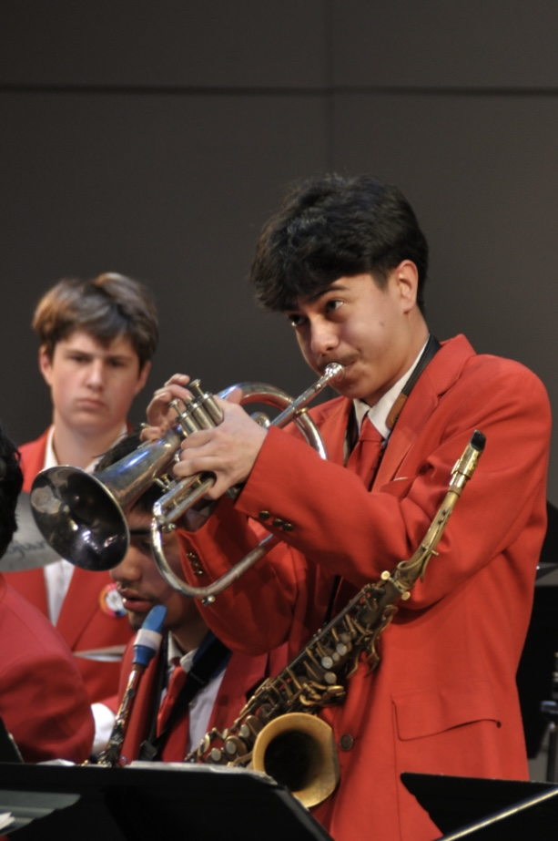

Mike Morales is a jazz musician, composer, and multi-instrumentalist from San Rafael, California. A graduating senior at San Rafael High School, he serves as the student director of the school’s jazz combo, leading a six-member ensemble while arranging repertoire and organizing performances at festivals and community events.
With a strong interest in music theory, composition, and arrangement, Mike enjoys reimagining jazz standards for small ensembles and big band settings while also developing original works in his own style. His musical practice spans several roles, from performer and bandleader to arranger and collaborator. Mike does this across instruments, in which he uses his expertise to prosper in his roles.
Looking ahead, he plans to continue performing and composing while pursuing computer science in college, with the goal of minoring in jazz studies and remaining active in collegiate jazz ensembles. Mike believes jazz is both a personal form of expression and a shared language that should remain accessible to musicians and audiences from every background.